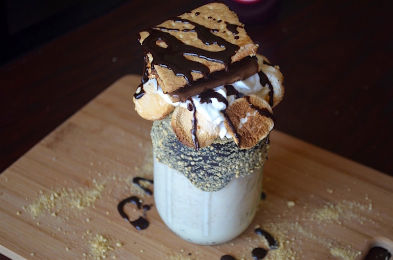

Toasted Marshmallow S'Mores Milkshake
Inspired by: Charlie And The Chocolate Factory

Description:
No need for a campfire when you're in Mr. Willy Wonka's Factory! This sweet treat is sure to get everyone's mouths watering.
Ready in: 8 mins
Serves: 1
Ingredients:
- 5 marshmallows
- 1/2 cup graham cracker crumbs
- 1/2 melted chocolate
- 5 scoops vanilla ice cream
- 1 Hershey's mini chocolate bar
- 1 graham cracker
- 1/3 cup milk
- Chocolate syrup
- Whipped cream
Directions:
- Toast the marshmallows by placing them in the oven on broil until golden brown.
- Make a s’more using a freshly toasted marshmallow, a piece of Hershey’s Chocolate and a graham cracker cut in half. Set aside.
- Place the melted chocolate in a bowl and roll the rim of your glass in it until it is fully covered.
- Roll the rim of the glass in graham cracker crumbs while the chocolate is still wet.
- Blend ice cream, milk, and 1/4 cup graham cracker crumbs until smooth.
- Pour into prepared glass and finish with whipped topping, the s’more, toasted marshmallows, and chocolate syrup.